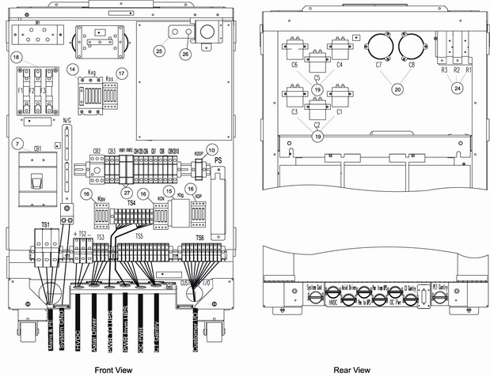
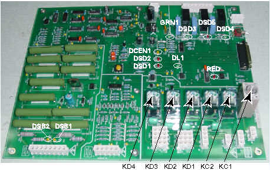
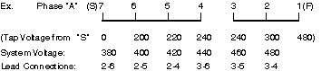
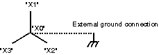
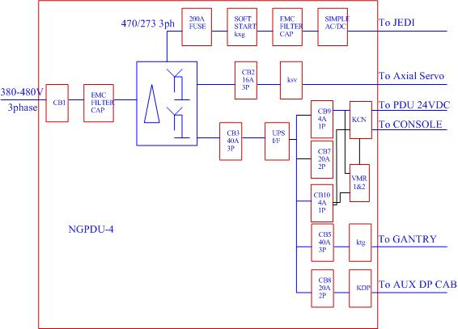
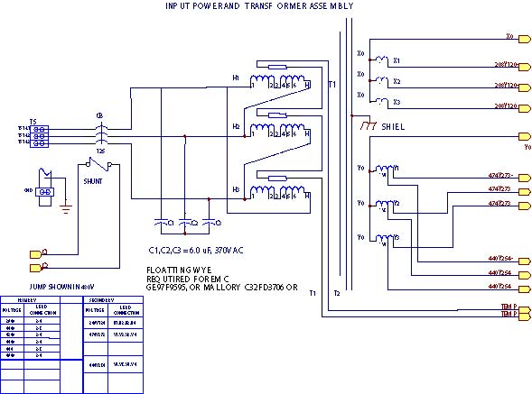
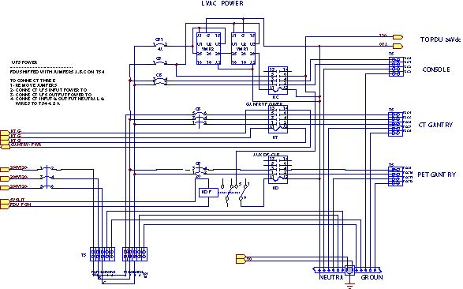
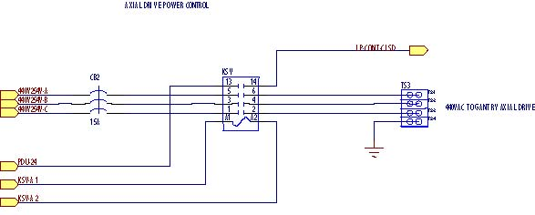
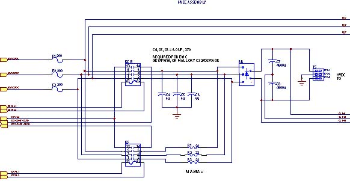
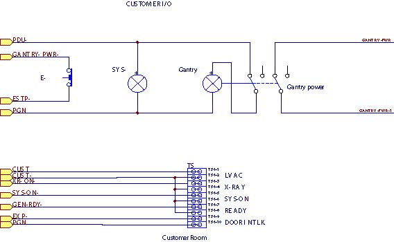

Operating Documentation
Direction 5307452-8EN, Rev# 4
Discovery CT750 HD Service Methods - Adv
Operating Documentation |
| Last Revised: | June 2005 |
This module contains the following sections:
Section 1 - Overview
Section 2 - NGPDU Physical Description
Section 3 - NGPDU Service Overview
Section 4 - NGPDU Electrical Specifications
Section 5 - NGPDU-4 Drawings
The PDU provides a single location to connect input power for the entire CT system. Its function is to provide the following features to the System:
Provide compensation means for a wide range of input voltages via tap selection
Provide required system AC power from a single source
Provide High Voltage DC power for x-ray generation
Provide power for gantry axial rotation
Provide a means for emergency shutdown of all x-ray and drives power circuits
Provide power for auxiliary data processing cabinet.
Provide system AC power circuit protection
Provide an interface for an external UPS connection
Meet the requirements of IEC601 for both radiated and conducted emissions
The enclosure has a front, rear and top access covers. The top cover is installed on the frame with a captive fastener in the middle of front edge. The front cover weighs less than 22 lbs (10 kg).
A single full-width Lexan safety shield is provided under the front cover. It extends ½” below the top front edge of the assembly to the bottom of all HVDC Supply components, including the PDU Control Board.
The rear cover is held in place by two captive fasteners. To maintain a good high frequency ground between internal subassemblies, all internal metal surfaces are solidly grounded to each other.
The main input transformer is located in the rear accessible chamber near the bottom of the cabinet, allowing enough room for cable access beneath. For ease of installation and serviceability the remaining components for the HVDC Supply and AC Power Distribution are located on the vertical dividing panel behind the front cover. Refer to Table 1below, for general component information. Items numbers in table appear in circles of Illustration 1.
Table 1: Major Components of NGPDU-4 (2326492-4)
| Item | Part No. | Name / Description | Comments |
| 1 | 2354578-2 | FRONT COVER | |
| 2 | 2354579 | SIDE COVER | |
| 3 | 2354580 | REAR COVER | |
| 4 | 2354581 | TOP COVER | |
| 5 | 2354559-2 | PANEL PLATE | |
| 6 | 2334820-2 | PDU CONTROL BOARD | |
| 7 | 2405168 | CB ASSY | CB1 |
| 8 | 2351484 | 15A BREAKER | CB2 |
| 9 | 2351485 | 40A BREAKER | CB3, CB5 |
| 10 | 2408196 | RELAY BASE MODEL PYF08A | KDDP |
| 11 | 2299717 | OMRON RELAY | |
| 12 | 5119460 | Break D-20A-2P | CB7, CB8 |
| 13 | 2295546 | BRK-4A | CB9, CB10 |
| 14 | 2351488 | 100A CONTACTOR | Kxg |
| 15 | 5119459 | GE contactor CL04A310M | Ktg |
| 16 | 2351490 | 18-32A CONTACTOR | Ksv, Kdp, KCN |
| 17 | 2351491 | 14-25A CONTACTOR | Kss |
| 18 | 2351492 | 200A FUSE | F1-F3 |
| 19 | 2113764-3 | CAPACITOR, 6UF, 370VAC PM, FILTER CAP | C1-C6 |
| 20 | 2351494 | 4600UF/450V CAPACITOR | C7, C8 |
| 21 | 2356924 | GROUND BLOCK | |
| 22 | 2351495 | DIODE BRIDGE | BR1 |
| 23 | 2361774 | 24VDC Power Supply | PS |
| 24 | 2391041-2 | Resistor Assy | R1-R3 |
| 25 | 2286488 | LED ASSY | LED |
| 26 | 2396924 | REAL SWITCH | Gantry EnableSwitch |
| 27 | 5137644 | Phoenix Relay (Voltage Monitor Relay) | VMR |
Illustration 1: Component/Physical Layout

| NOTE: | For a larger version of the illustration, click on the pdf icon below: |
Media File 1: Component/Physical Layout

The PDU has a rating plate permanently attached to the rear cover, near the top edge and approximately centered on the cabinet. It contains the following information:
Manufactured for GE Healthcare by (Vendor Name) Made in (Country of origin) Power Distribution Unit Model No. 2326492-4 / (Vendor model # if different) Serial No. ____________ Input Voltage: 3 ~ 380 // 480 V Line Frequency: 50 / 60 Hz Input Power: Momentary 150 kVA @ 0.85 PF Continuous 25 kVA Weight 770 lbs. (350 kgs.) Mfg Date: ___________ (Appropriate test house markings, e.g., UL, ETL, CSA or eq.)
For ease of identification by service personnel, an auxiliary rating plate is attached inside the unit in a location that is easily visible when servicing the unit from the front. It includes the GEHC model number, 2326492-4, and the unit serial number.
The NGPDU does not require any specific periodic maintenance. An annual inspection for lint & dust with attendant cleaning may include checks for proper tightness of electrical terminals.
All replacement parts required for servicing the PDU are directly interchangeable without need of any re-adjustment. Circuit boards and sub-assemblies are given unique part numbers and revisions are completely backward compatible. Any changes to form, fit, or function which affect interchangeability shall require the assignment of a unique part number.
The PDU-4 is designed so no special service tools are required. The assembly can be serviced with standard service tools.
There are 17 LEDs on the PDU Control Board. See Illustration 2.
Illustration 2: LEDs on the PDU

The ON / OFF status of these LEDs are explained in the below table:
Table 2: LED Description
| LED on Control Bd | Description | Error | ||
|---|---|---|---|---|
| ID | NAME | ON | OFF | |
| DSD1 | Voltage Fault | It’s for HVDC - If the differential buss voltage exceeds 500Vdc within the first 200mS after turning on the PDU Control board, control board shall detect and latch a VFLT condition and shall issue a “VFLT”.i.e. DSD1 light. | If the contactors Kxg and/or Kss are closed, the control board should not have this issue.i.e. DSD1 OFF. | DSD1 LED ON (RED) |
| DSD2 | BUSS Fault | It’s for HVDC - If the differential buss voltage does not exceed 200Vdc within the first 200mS after turning on the PDU Control board, control board shall detect and latch a BS_FLT condition and shall issue a “BUSS_FLT”. i.e. DSD2 light. | If the contactors Kxg and/or Kss are closed, the control board shall open them,i.e. DSD2 OFF. | DSD2 LED ON (RED) |
| DSD3 | RDY light | This is the “Generator Ready” Light. NGPDU provides isolated terminals KD7 for customer Room Light connections. | This means the “Generator is not ready.”. | DSD3 LED OFF (GREEN) |
| DSD4 | X-ray light | From the Gantry to close the “X-Ray ON” Light. NGPDU provides isolated terminals KD7 for customer Room Light connections. | This means the X-ray shouldn’t be ON from Gantry signal. | DSD4 LED OFF (GREEN) |
| DSD5 | SYS light | Input signal from the Gantry to close the “System ON” Light relay. NGPDU provides isolated terminals KD5 for customer Room Light connections. | System OFF | DSD5 LED OFF (GREEN) |
| DSB1 | HV- | Has HVDC- | No HVDC- | DSB1 LED OFF (YELLOW) |
| DSB2 | HV+ | Has HVDC+ | No HVDC+ | DSB2 LED OFF (YELLOW) |
| DCEN1 | DC Enable | If the contactors Kxg and/or Kss are not closed, and there is no issue, DCEN1 is on. | If the contactor Kxg and/or Kss are closed, and there is no issue, DCEN1 is off. | DCEN1 LED OFF (Green) |
| GRN1 | Voltage +24V | 24VDC green status indicator lamp - it will be ON whenever the NGPDU is energized. | 24VDC green status indicator lamp --it will be OFF whenever the NGPDU is powered off. | GRN1 LED OFF (Green) |
| DL1 | Phase Loss | A phase under-voltage / open fuse detection circuit on the PDU Control board. If the voltage w.r.t. ground on any one or more phases drops below 185Vac (~70% of the normal), DL1 light. | If contactors Kxg and/or Kss (described above) are closed, no phase loss issue. | DL1 LED ON (RED) |
| RED | Interlock Open | This is +24Vdc output signal to Gantry that indicates the customer room door interlock is open. This signal automatically resets and dynamically tracks the status of the interlock circuit. | It means no interlock happens. | interlock LED ON (RED) |
| KC1 | Relay LED | Over temperature protect status | Not over temperature protect or less than 30s | LED ON(RED) |
| KC2 | Relay LED | Over temperature protect status | Not over temperature protect | LED ON(RED) |
| KD1 | Relay LED | Ktg Power ON | Ktg Power OFF | LED OFF (Green) |
| KD2 | Relay LED | ksv Power ON | Ksv Power OFF | LED OFF (Green) |
| KD3 | Relay LED | Kss Power ON | Kss Power OFF | LED OFF (Green) |
| KD4 | Relay LED | Kxg Power ON | Kxg Power OFF | LED OFF (Green) |
Table 3: NGPDU Control Board Switches and Fuses
| SWITCH | NAME | POSITION | DESCRIPTION |
| SW 1 | Reset | pressed | clear all warning LED, control board goes to normal active state. |
| not pressed | normal active state. | ||
| SW 2 | MNL HVDC | AUTO(OFF) | normal active state. |
| MAN(ON) | Manually turns HVDC on. Bypasses firmware HVDC control. Gantry 120 VAC must be "on" and HVDC Enabled at service switch board for HVDC to be present at gantry. Troubleshooting aid. | ||
| FUSE | NAME | RATING | DESCRIPTION |
| 1 | FC10A | 6A250VAC | fuse of the external light (SYSLIFT,RDYLITE,XRAYLITE) |
The NGPDU-4 provides the input power connection point for the CT system. It contains a three-phase isolation transformer with multi-tapped primary and dual grounded secondary windings. One secondary is used to power the X-Ray Generation and gantry Axial Drive sub-systems. The other secondary provides all computer and control power to the system. In addition, various circuit breakers and a system I/O control board assembly are provided. A simplified schematic of the system is shown in Illustration 1.
The incoming power wires and main ground wire is terminated at the NGPDU-4 using a compression type terminal block. The input terminals accommodate #1/0 AWG fine strand wire. The input ground terminal accommodates #1/0 AWG (55mm2) fine strand wire. Ferrules are provided for field termination of the incoming leads.
The NGPDU-4 is protected by an input thermal / magnetic circuit breaker rated 125A. The opening of this breaker causes the PDU to lose all power except for the wiring from the point of entry from the source to the circuit breaker. This wiring is contained within the rear compartment of the PDU enclosure, up to the point of connection to the circuit breaker. The breaker is provided with a remote shunt trip mechanism. The PDU control board will activate this feature when a thermal overload of the input transformer is sensed. The trip circuitry will automatically reset upon cooling of the transformer to acceptable limits. Manual operation of the breaker requires the removal of the PDU front access cover. Loss of power does not trip the input circuit breaker.
Low inductance, AC filter capacitors rated for mains connection are installed in a floating wye configuration on the three primary lines, on the load side of the fuses. Each capacitor is rated at 6.0 µF.
The main input transformer is an indoor style, multiple winding, 3-phase isolation transformer. It has an open frame, varnish impregnated core & coil construction. It is suitable for continuous duty without requiring forced air-cooling. The insulation system used is UL, CSA, & IEC recognized for 180C (Class H) or better, and each transformer is labeled accordingly.
The magnetic circuit is designed for nominal 50/60 Hz operation (47 to 63 Hz limits). It accommodates a daily variation of ±10% input voltage, (i.e., 110% input voltage doesn’t cause excessive exciting current and core losses). Under worst case conditions, the transformer’s peak inrush current is less than 1000A when properly connected and energized at 380 V, 50 Hz.
All power for the CT System passes through the primary winding of the input transformer. It is protected by the primary input fuses described above.
The primary winding is designed for delta connection. Voltage selection taps are provided on each phase to accommodate 20 volt steps over the input voltage range of 380 to 480 V. All leads are brought out to a panel for external voltage selection. Leads are designated as follows:
Illustration 3: Compact PDU Primary taps

The gap in the winding between sections is located at the electrical middle of the winding, i.e., 240vac from the “S” end. This feature allows the use of an alternate connection pattern for 200/220/240 volt input. In this configuration the PDU maximum momentary input rating is limited to 90kVa.
The connection options are:
| System Voltage: | 200 | 220 | 240 |
| Lead Connections: | 1-6 | 1-5 | 1-4 |
This winding contains three normally closed thermal cutout switches, one securely embedded in each phase coil. These switches are set to open at a nominal temperature of 150C. They are capable of interrupting 120 Vac, 1 A, contactor coil power.
At shipment, the primary taps are set to the 480 volt connection.
Secondary #1 is a 208Y/120V wye connected power winding. The phase leads are labeled X1, X2, and X3. The neutral, labeled X0, is isolated and brought out for external connection to ground.
Illustration 4: Secondary “X” Winding Configuration

The output of this winding is protected with a 3-pole, 40A circuit breaker, labeled CB3. Phases of this winding feed general-purpose power to the CT system. Phase B, C of this winding feeds the auxiliary data processing cabinet.
Secondary #2 is a nominal 474Y/273V wye connected power winding. The phase leads is labeled Y1, Y2, and Y3. The neutral, labeled Y0, is isolated and brought out for external connection to ground.
The output of the full winding is fused with 200A semiconductor fuses, labeled F1, F2, & F3. However, the winding protection will be accomplished electronically by the load control circuitry for both short-circuit and thermal overloads.
Full width electrostatic shields are provided between the primary and secondary windings. These are made from 0.005” copper or aluminum foil, with a minimum 0.5” insulated overlap. Each shield is grounded to the core and frame with green leads as short as practicable. (The lead position and attachment method minimizes shield impedance to high frequency noise signals.)
A general overview of the AC Power Distribution of NGPDU-4 system is shown in the diagram below. The high voltage DC output is provided by the secondary wind #2, and the 3-phase AC (440V) provided to axial servo also comes from this wind but with different taps.
Illustration 5: Power Distribution

All control communication from / to the CT system will be via a 24Vdc hardwire interface. The 24Vdc power source for communication to the system is located in the NGPDU-4. A PDU Control Board (FRU item) located within the PDU will provide the sequencing of the various sub-system power contactors as commanded by the system.
The following is a list of NGPDU-4 Control Signals, which is made accessible by means of a 25 position, female subminiature D connector located in the output bulkhead. This connector is labeled J1.
Table 4: Subsystem Signal List
| Pin # | Signal Name | Functional Description |
|---|---|---|
| 1 | +24V | +24Vdc output to gantry. |
| 2 | +24V | Redundant pin +24Vdc connection. |
| 3 | GANTRY_PWR-CLSD | +24Vdc output signal from normally open auxiliary contact on the Gantry Power Contactor. |
| 4 | ESTP-SRC | +24Vdc output from PDU E-Stop momentary Pushbutton (normally closed) to E-Stop control loop in Gantry. |
| 5 | LP-CONT-CLSD | +24Vdc output signal to Gantry from a normally open auxiliary contact on the Axial Servo Power Contactor. |
| 6 | XG-CONT-CLSD | +24Vdc output signal to Gantry from a normally open auxiliary contact on the XG Power Contactor. |
| 7 | KSS-CONT-CLSD | +24Vdc output signal to Gantry from a normally open auxiliary contact on the XG Soft-Start Contactor. |
| 8 | PHASE-LOSS | Latched +24Vdc output signal to Gantry that indicates one or more phases of the 380-480VAC feeding the generator was less than the required minimum voltage. |
| 9 | ILK_OPEN | +24Vdc output signal to Gantry that indicates the customer room door interlock is open. |
| 10 | BUSS-FLT | Latched +24Vdc output signal to Gantry that indicates the HVDC did not charge to >200V in 200mS. |
| 11 | OVER_TEMP | Latched +24Vdc output signal to Gantry that indicates the input transformer has overheated. |
| 12 | N/C | (1k pull-down to PGND to prevent floating wire) |
| 13 | CHASSIS-GND | Chassis (earth) ground connection for cable shield. |
| 14 | PGND | Control power return (PGND) for 24Vdc control circuits to/from gantry. Signal referenced to chassis ground in PDU. |
| 15 | PGND | Redundant pin for PGND connection. |
| 16 | GANTRY_PWR | Steady-state +24Vdc input signal from the Gantry to close the CT Gantry Power Contactors (KTG). |
| 17 | EXP-INTLK | Exposure Interlock current loop from Gantry to PDU. (PDU provides series connection for customer Room Door Interlock between PDU_PGND and this signal.) |
| 18 | CLSELOOP | Steady-state +24Vdc input signal from the Gantry to close the Axial Power Contactor (KSV). |
| 19 | XG-CONT | Steady-state +24Vdc input signal from the Gantry to close the XG Soft-Start & Power Contactors (KSS & KXG). This signal is serially connected to the thermal switch, which is used to prevent the overheating of discharge resistors on control board when IGBT happen failure. |
| 20 | XRAYLITE | Steady-state +24Vdc input signal from the Gantry to close the “X-ray ON” Light relay. |
| 21 | SYSLITE | Steady-state +24Vdc input signal from the Gantry to close the “System ON” Light relay. |
| 22 | RDYLITE | Steady-state +24Vdc input signal from the Gantry to close the “Generator Ready” Light relay. NGPDU provides isolated terminals for customer Room Light connections. |
| 23 | XG_ENBL-CONT | Steady-state +24Vdc input signal from the Gantry to indicate the HVDC Bus is enabled. |
| 24 | N/C | (1k pull-down to PGND to prevent floating wire) |
| 25 | N/C | (1k pull-down to PGND to prevent floating wire) |
A ten position terminal block, labeled TS6, is provided in the output bulkhead for connection of the customer room warning lights and door interlock. This terminal block has compression type terminals approved for use with bare or stranded wire and shall be suitable for a wire size range of 14 to 10AWG (2.25 to 5.5 mm2).
Terminals 1 through 8 are used for connection of external hospital room warning lights as described below. Terminals 9 & 10 are used for connection of a room door interlock switch in the system x-ray enable circuit.
EXTERNAL “XRAY ON” LIGHT - A normally open relay contact rated 125 VAC, 10 Amps is connected between Positions 3 & 4 of the terminal block.
EXTERNAL “SYSTEM ON” LIGHT (Currently this function is not yet available) - A normally open relay contact rated 125 VAC, 10 Amps is connected between Positions 5 & 6 of the terminal block.
EXTERNAL “GENERATOR READY” LIGHT - A normally open relay contact rated 125 VAC, 10 Amps is connected between Positions 7 & 8 of the terminal block.
Positions 2, 4, 6 and 8 of the terminal block are jumpered together. Series RC networks having a resistance of 470 ohms, a capacitance of 0.47 uF and a voltage rating of 250 VAC, are connected across terminal block positions 3 & 4, 5 & 6, and 7 & 8 on the Control Board.
The terminal block is labeled as follows:
| Positions 1 and 2, “LVAC INPUT”. |
| Positions 3 and 4, “X-RAY LIGHT.” |
| Positions 5 and 6, “SYS-ON LIGHT”.(Not yet Available) |
| Positions 7 and 8, “READY LIGHT”. |
In addition, the following information appears near the terminal block:
| POTENTIAL FOR ELECTRICAL SHOCK. | |
| TURNING OFF POWER TO THE PDU MAY NOT REMOVE POWER TO THIS TERMINAL BLOCK. | |
| VERIFY REMOVAL OF POWER WITH AN APPROPRIATE MEASURING DEVICE BEFORE SERVICING. INPUT VOLTAGE NOT TO EXCEED 30VAC. |
ROOM DOOR INTERLOCK - Positions 9 & 10 of the terminal block provide for a Room Door interlock in the X-Ray Exposure control of the system. Terminal 9 is to be connected to the EXP_INTLK signal (J1-17) and terminal 10 is to be connected to PDU_PGND on the PDU Control Board.
These terminals are clearly labeled “DOOR INTLK SW”.
At shipment from the factory, each NGPDU has a 14 AWG (2.25 mm2) jumper wire installed between terminals 9 & 10.
A 24Vdc green status indicator lamp is visible from the front of the unit. The lamp is "ON" whenever the NGPDU is energized.
A normally closed momentary push button is provided, mounted essentially flush with and accessible through the front cover of the NGPDU. It is wired in the "ESTP_SRC" control path. When pressed, controls located in the CT Gantry will disable X-Ray and Drives power.
The PDU Isolation Transformer, Secondary #1, supplies low voltage AC subsystem power. It is protected at 40A per phase with a three-pole, 40A circuit breaker. The full winding protection breaker is labeled CB3.
A 10 position terminal strip, labeled TS4, is provided in the bulkhead for connection of an optional partial system UPS. This terminal block has compression type terminals approved for use with bare or stranded wire and is suitable for wire size 8AWG.
Terminals TS4-1 through TS4-5 provide output power connection to the optional UPS. Terminals TS4-6 through TS4-10 provide the power connections back to the NGPDU from the UPS. Connections are as follows:
Table 5: UPS Connection
| Terminal Number | Signal Name | Functional Description |
|---|---|---|
| 1 | CB3-A | Phase A, 120VAC power to UPS |
| 2 | CB3-B | Phase B, 120VAC power to UPS |
| 3 | CB3-C | Phase C, 120VAC power to UPS |
| 4 | 0VAC | Neutral (0VAC) to UPS |
| 5 | GND | Safety ground (G/Y) wire to UPS |
| 6 | UPS-A | Phase A, 120VAC power from UPS |
| 7 | UPS-B | Phase B, 120VAC power from UPS |
| 8 | UPS-C | Phase C, 120VAC power from UPS |
| 9 | 0VAC | Neutral (0VAC) from UPS |
| 10 | GNDC | Safety ground (G/Y) wire from UPS |
Jumpers connect terminals 1 to 6, 2 to 7, and 3 to 8 with the PDU loads connected to the outputs of terminals 6, 7, & 8. These jumpers will be removed in the field whenever an optional UPS is used with the system.
AC power is distributed to the CT System via seven (7) separate branch circuits. These branches are protected by individual circuit breakers as follows:
Table 6: Circuit Breaker
| Breaker | Rating | Poles | Phase | Load Description |
|---|---|---|---|---|
| CB5 | 40A | 3 | A, B, C | CT Gantry Rotating Loads |
| CB7 | 20A | 2 | B, C | Operator Console |
| CB8 | 20A | 1 | B, C | Auxiliary data processing cabinet power supply |
| CB9 | 4A | 1 | A | NGPDU Control Power Supply |
| CB10 | 4A | 1 | C | VMR Load |
A 13 position terminal strip, labeled TS5, is provided in the bulkhead for field connection of LVAC power output to external subsystems. This terminal block has compression type terminals approved for use with bare or stranded wire and suitable for #12 to #8 AWG stranded wire. Three cable clamps is provided at the NGPDU bulkhead, which is used for strain relief of the field installed system power cables.
Two single-phase 20A, 3-wire circuit feeds the Operator Console. It is live whenever the NGPDU-4 is energized and CB7 is enabled. Power output connections is provided at TS4 as follows:
| Terminal Number | Signal Name | Functional Description |
| 0 | CB7-B | Phase B, 120Vac power to Console |
| 1 | CB7-C | Phase C, 120V ac power to Console. |
| 2 | 0VAC | Neutral (0VAC) to Console |
| 3 | GND | Safety ground (G/Y) wire to Console |
A 3-phase circuit feeds the CT gantry. These three circuits will be sourced from different phases of the transformer and have the same circuit protection. However, they will all be routed to the gantry in one common 5-wire cable. The circuit is switched via a power contactor, Ktg. The PDU control board in response to the "GANTRY_PWR" signal from the CT Gantry manages control of contactor Ktg. A normally open auxiliary contact on Ktg is used to create the response signal "GANTRY_PWR_CLSD" to provide status feedback information to the system. Power output connections is provided at TS4 as follows:
| Terminal Number | Signal Name | Functional Description |
| 4 | Ktg-120A | Phase A, 120Vac power to CT Gantry |
| 5 | Ktg-120B | Phase B, 120Vac power to CT Gantry |
| 6 | Ktg-120C | Phase C, 120Vac power to CT Gantry |
| 7 | 0VAC | Neutral (0VAC) to CT Gantry |
| 8 | GND | Safety ground (G/Y) wire to CT Gantry |
Provision is made for two 20A, single-phase 120 circuit to feed an auxiliary data processing cabinet system. This circuit is sourced from the "B" and "C" phase of the transformer. It is protected by a two-pole circuit breaker, CB8, and will be switched with the contactor KDP. Power output connections is provided at TS5 as follows:
| Terminal Number | Signal Name | Functional Description |
| 9 | Ktg-120B | Phase B, 120Vac power to Aux DP CAB |
| 10 | Ktg-120C | Phase C, 120Vac power to Aux DP CAB |
| 11 | 0VAC | Neutral (0VAC) to Aux DP CAB |
| 12 | GND | Safety ground (G/Y) wire to Aux DP CAB |
The 440V taps of secondary #2 will be used to power an external variable speed AC motor drive used for axial rotation of the gantry. The drive uses a conventional three-phase full wave bridge rectifier input circuit. This produces strong 5th & 7th harmonic currents typical of 6-pulse rectification. The effective load presented to the PDU, assuming an 8% duty cycle, is 4.6A per phase. The maximum load under gantry acceleration conditions is 15A.
The circuit is to be protected at 16A per phase with a three-pole, 16A circuit breaker, labeled CB2.
The CB2 circuit breaker feeds a three-pole contactor, Ksv. The PDU control board, in response to the "CLSELOOP" signal from the CT Gantry, manages contactor Ksv. A normally open auxiliary contact on Ksv is used to create the response signal "LP_CONT_CLSD" to provide status feedback information to the system.
Output leads from the Ksv contactor terminates in a four position terminal block, labeled TS3. In addition to the cable ground connection, a cable clamp is provided at the NGPDU bulkhead, which is used for strain relief and 360 termination of the shield of the field installed cable.
Table 7: TS3 Terminal Block
| Terminal Number | Signal Name | Functional Description |
|---|---|---|
| 1 | Ksv-440A | Phase A, 440Vac power to Axial Drive |
| 2 | Ksv-440B | Phase A, 440Vac power to Axial Drive |
| 3 | Ksv-440C | Phase A, 440Vac power to Axial Drive |
| 4 | GND | Auxiliary safety ground (G/Y) wire to Axial Drive. |
The HVDC power supply is an unregulated, six-pulse DC power source, which feeds the high voltage subsystem used to generate x-rays. For model 2326492-4 the output voltage of this supply ranges between a maximum of 740VDC (No Load) and a minimum of 480VDC (minimum sag at a maximum step load of 225ADC).
The input to the HVDC Supply is the 3-phase, output from the transformer secondary #2 as described in this specification. The output of this winding is protected by semiconductor fuses, labeled F1, F2, & F3.
The load side of the fuses is connected to a three-pole contactor, Kxg, having an AC1 rating of 100 Amps. The load side of the contactor is connected to the input of a 3 phase, full wave bridge rectifier / capacitor filter circuit. An auxiliary contactor, Kss, in series with a 20 ohms / phase resistive soft-start circuit is connected in parallel with the main contacts of Kxg.
The PDU control board in response to the "XG_CONT" signal from the CT Gantry manages contactors Kss & Kxg, subject to the Protection Control Functions described below. A normally open auxiliary contact on Kxg is used to create the response signal "XG_CONT_CLSD" and, similarly, a normally open auxiliary contact on Kss is used to create the response signal "KSS_CONT_CLSD" to provide status feedback information to the system.
Low inductance, AC filter capacitors (FRU item) rated for mains connection is installed in a grounded wye configuration on the load side of Kxg. Each capacitor is rated 6.0 uF and have a minimum operating voltage rating of 330 VAC with a surge voltage rating of at least 2KV. If metal can style capacitors are used, their cans must be solidly grounded to chassis metal and they must be suitable for 330 VAC line to ground operation.
A 3-phase, full wave bridge rectifier rated 200 Amp, 1600V is used, (FRU item). The bridge rectifier is mounted to an aluminum heat sink, approximately 2” X 6” X 1/4”. Aluminum Association Type 1100-F or equivalent aluminum is used. Thermal compound is used between the heat sink and rectifier and between the heat sink and chassis-mounting surface in accordance with the bridge manufacturer's specification.
The DC output of the bridge rectifier is filtered with two 4600uf, 450 volt electrolytic capacitors (FRU item) connected in series across the output terminals of the bridge. A discharge resistor network for each capacitor is included on the pdu control board.
| NOTE: | Depending on system configuration, additional DC filter capacitance may be connected in parallel within the CT Gantry Power Pan assembly and / or JEDI Inverter. |
HVDC output leads from the capacitors terminate in a three position terminal block, labeled “ TS2”. In addition to the cable ground connection, a cable clamp is provided at the NGPDU bulkhead, which is used for strain relief and 360 termination of the shield of the field installed cable.
| Terminal Number | Signal Name | Functional Description |
| 1 | ”+” | HVDC to CT gantry |
| 2 | GND | Auxiliary safety ground (G/Y) wire to CT gantry |
| 3 | “-” | HVDC Return to CT gantry |
Phase Loss Fault
A phase undervoltage / open fuse detection circuit on the PDU Control board monitors the status of the three fuses described above. If the voltage w.r.t. ground on any one or more phases drops below 185Vac (~70% of nominal) the PDU Control board detects and latches a PH_LOSS_UV condition and issues a "PHASE_LOSS" fault signal to the system.. If contactors Kxg and/or Kss (described above) are closed, the control board opens them.
Buss Fault
A Buss Fault detection circuit on the PDU Control board monitors the status of the HVDC. If the differential buss voltage does not exceed 200Vdc within the first 200mS after turn-on the PDU Control board detects and latches a BS_FLT condition and shall issue a "BUSS_FLT" fault signal to the system. If contactors Kxg and/or Kss (described above) are closed, the control board shall open them.
Fault Reset
The latched faults described above are reset automatically via board power-up or the next assertion of "XG_CONT". A momentary pushbutton is also provided whereby service personnel may manually assert the reset signal.
Illustration 6: Input Power & Transformer Assembly

| NOTE: | For a larger version of the illustration, click on the pdf icon below: |
Media File 2: Input Power & Transformer Assembly

Illustration 7: LVAC Power Distribution & Control

| NOTE: | For a larger version of the illustration, click on the pdf icon below: |
Media File 3: LVAC Power Distribution & Control

Axial Drive Power is controlled by relay Ksv and is protected by circuit breaker CB2. When the PDU control board senses an e-stop condition, NGPDU is disconnected with Gantry_PWR_CLSD loop, which prevents activation of the relay Ksv.
Illustration 8: Axial Drive Power Control

| NOTE: | For a larger version of the illustration, click on the pdf icon below: |
Media File 4: Axial Drive Power Control

When the XG-CONT signal is received, the HVDC supply will produce output. When the coils KD4 is energized, the coil Kxg is energized. The contacts on Kxg close and supply power to the HVDC supply. This operation can be inhibited by the PDU control board “E-stop” circuit, through relay contacts Ktg. See Illustration 9.
Illustration 9: HVDC Supply Control

| NOTE: | For a larger version of the illustration, click on the pdf icon below: |
Media File 5: HVDC Supply Control

Illustration 10: Customer I/O

| NOTE: | For a larger version of the illustration, click on the pdf icon below: |
Media File 6: Customer I/O